Materiales en las estructuras
A lo largo de la historia se han utilizado muchos tipos de materiales para la construcción de estructuras, las cuales, también han ido evolucionando según los conocimientos que se adquirían y los nuevos materiales utilizados.
Se puede hacer un cuadro resumen, donde se marcan los materiales mas significativos en diferentes épocas históricas.
|
|
MATERIALES |
ESTRUCTURAS |
|
|
|
Cabañas. 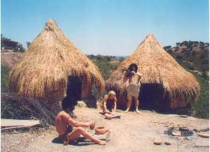
|
|
|
|
Estructuras macizas (piramides). Muros de carga. Columnas con dintel en templos. 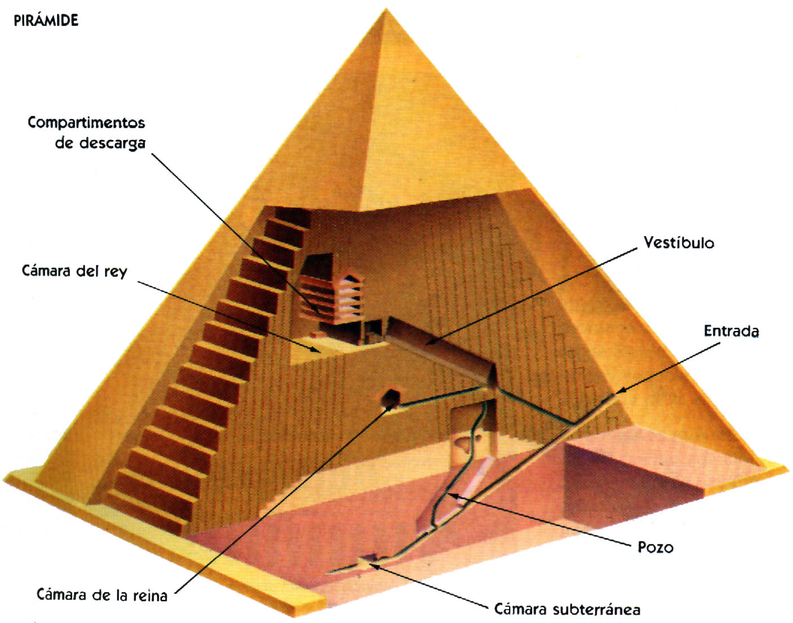 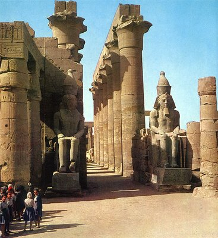 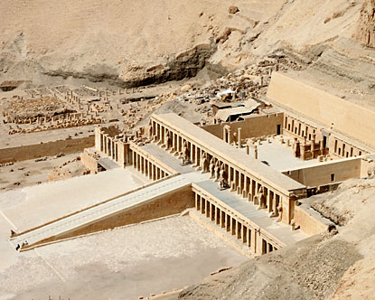 Esquema de pirámide Templo egipcio Valle de los Reyes |
|
Roma |
Piedra, madera, ladrillo y argamasa |
Acueductos, templos, puentes, teatros, etc. Arcos, bóvedas y cúpulas. 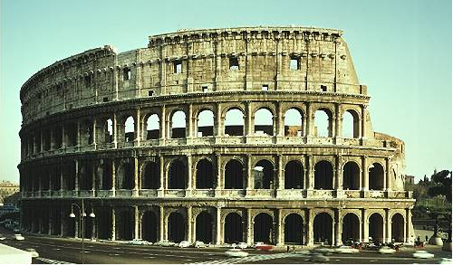 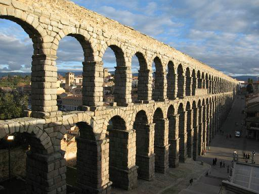 Coliseo de Roma Acueducto de Segovia 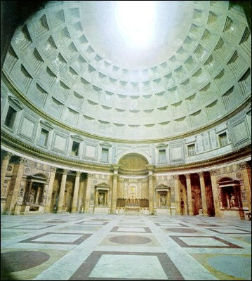Panteón de Agripa (Roma). |
| Baja Edad Media |
Piedra, madera y ladrillos |
Estructuras maciza (Iglesias y fortalezas). Arcos medio punto. 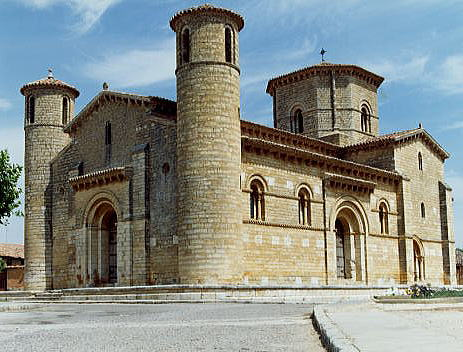 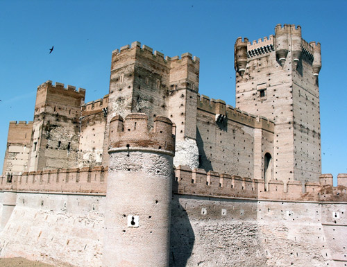 Iglesia de San Martín de Fromista (Palencia) Castillo de la Mota (Valladolid) 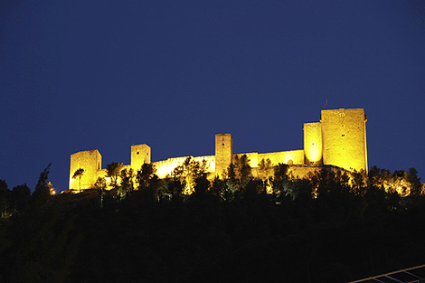 Castillo de Santa Catalina (Jaén) |
|
Alta Edad Media |
Piedra, madera y ladrillos |
Gótico. Arcos ojivales. Estructuras más ligeras que permitían mas espacios (vidrieras). 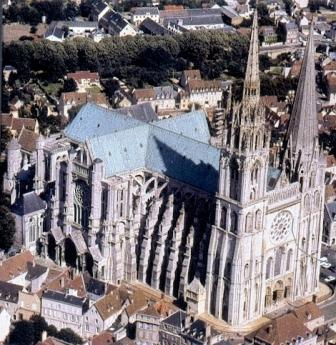 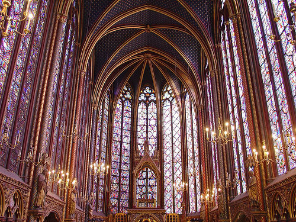 Catedral de Chartres (Francia) Santa Capilla (Sainte Chapelle) París |
|
Revolucón Industrial |
Acero |
Estructuras metálicas. Cerchas. 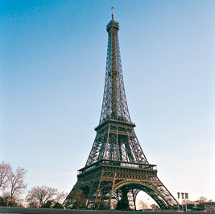 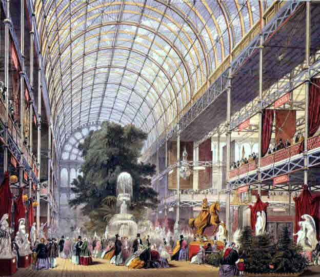 Torre Eiffel (París) Palacio de Cristal (Londres) 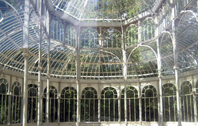 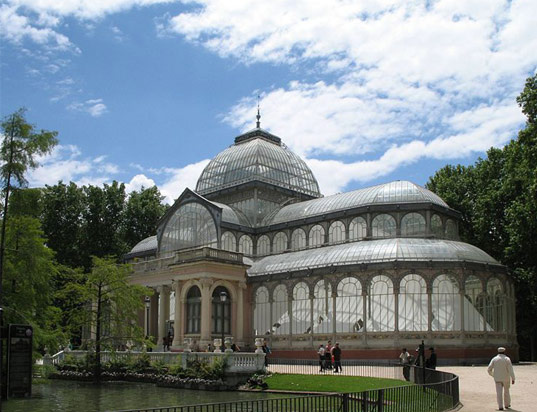 Palacio de Cristal (Parque del Retiro, Madrid) Vistas interior y exterior. 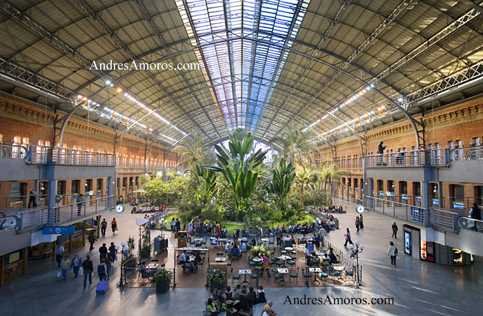 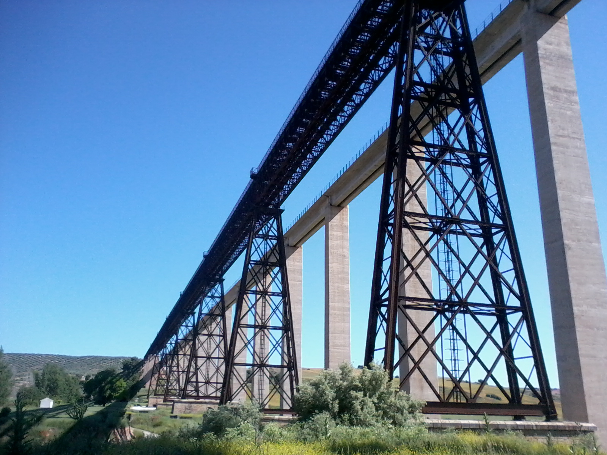 Estación de Atocha (Madrid) Puente del Hacho (Guadahortuna, Granada) |
|
Actualidad |
Acero y hormigón |
Pilares, vigas y jacenas. 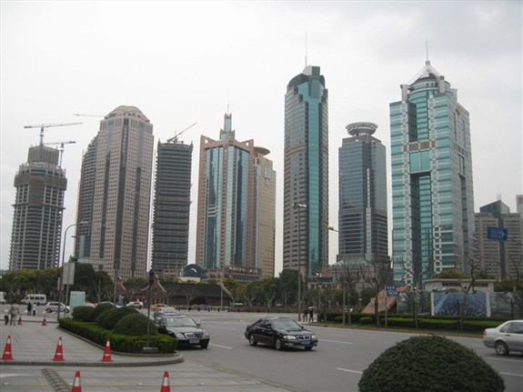 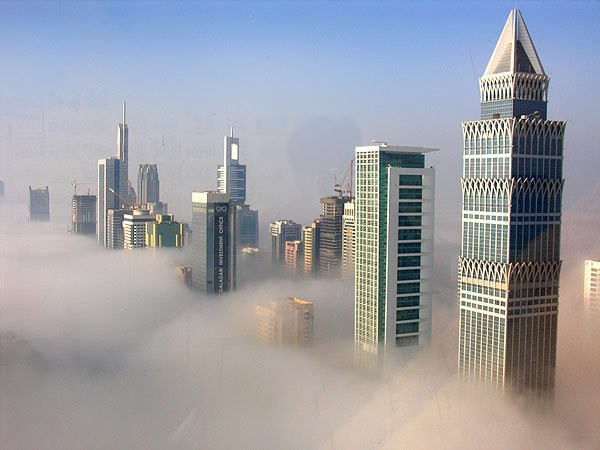 Rascacielos 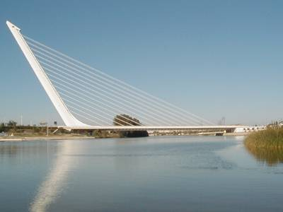 Puente del Alamillo (Sevilla) |
Obra publicada con Licencia Creative Commons Reconocimiento No comercial Sin obra derivada 4.0